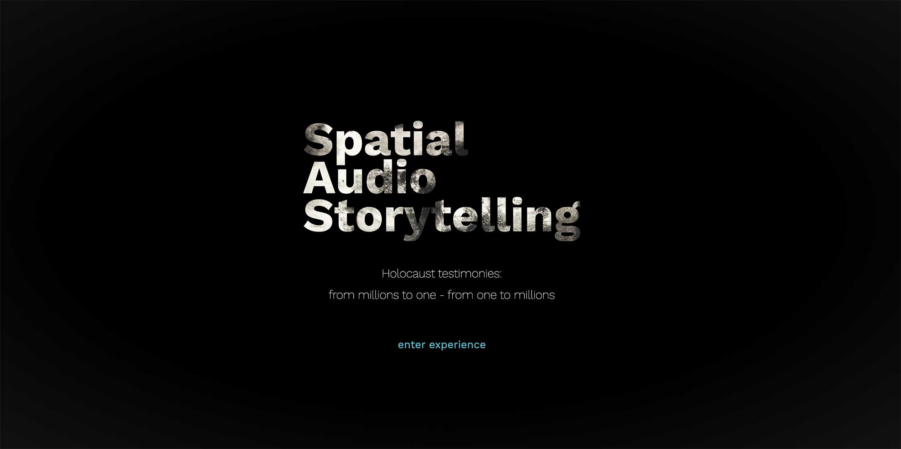
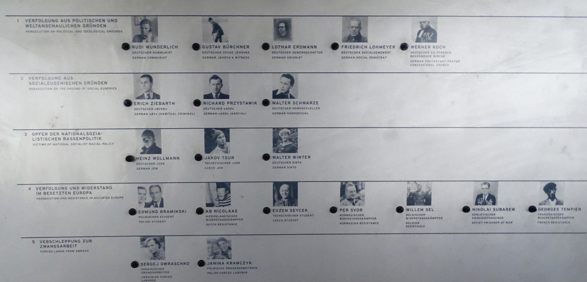
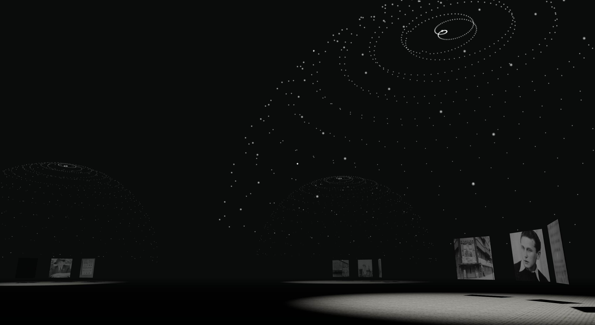
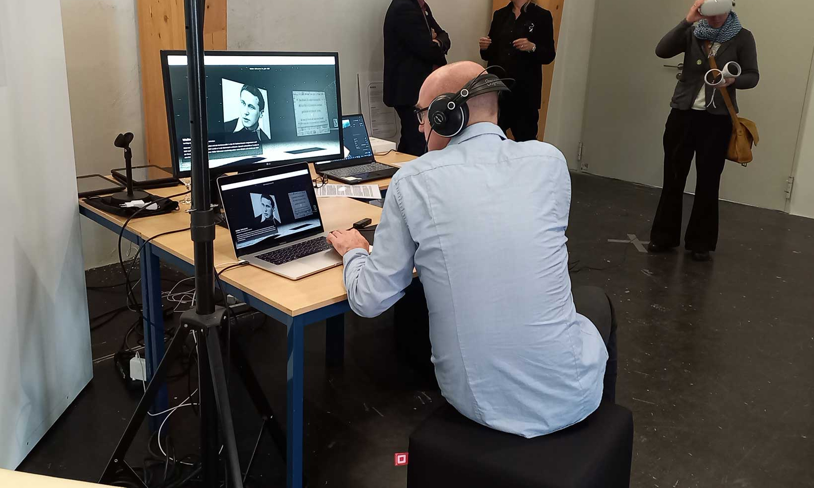

This project was realized in collaboration with the SPUR.lab (Site Specific Augmented Storytelling lab), which is a Potsdam-based interdisciplinary research group focused on the investigation and development of new narrative forms of National Socialism and the Former concentration camps in Brandenburg.
The pilot prototype explores new digital storytelling and educational formats directly in the browser and serves as an alternative way to preserve the voices that witness the atrocities of the National Socialism period in Germany.
The collaboration and the support received from the memorial site of Sachsenhausen allowed me to gain access to the auditive audio guide that enable the visitors to discover the vast complexity of the historical establishment in the former concentration camp.
The collection of the media library consists of over 200 eyewitness testimonies that are preserved partly as the original recording, partly as transcribed material.
One of the main interpretations that is posed with this prototype is the usage of digital technologies for the expression of the instinctive reaction of the human mind facing any tragedy that may involve a community. Thus, the main principle underlying this project is the perception of a singular voice in comparison to a thousand, that changes how we feel emotionally.
The design of an interactive audio experience requires an initial research aimed at finding of the right technology that could be adopted in the prototype. In this work, the principal goal was firstly to allow the use of regular PC audio in the web browser and link it to different audio scenes. Each file is located in a specific location within the digital space, thus allowing the creation of reference points for navigation. In this way, thanks to listening through headphones, it is possible to recreate a situation in which one is in the midst of people telling their story, though without being able to distinguish any of them. Moving towards the different spots where the audio files are located, it will be possible to distinguish the voice and the story contained in it.
This image shows the first screen of the prototype. By entering the first virtual scene, the user is caught by a dark environment with various beams of lights located in different spots at a specific distance between each other. In this scene, the user hears a slight buzz of voices in the background made up by the different voices of the testimonies that are pulled together in an indistinguishable way.
By moving within the initially dark virtual scene, the positional audio allows the user to decide how to navigate according to the direction the voices are coming from. Every voice is indeed anchored to a specific beam of light. The volume of the voice linked to that spot increases by moving closer and closer to it, until the arrival at the center of the cone of light, where only one specific voice can be distinct and heard.
Inside each specific cone of light, the volume of the audio is at its maximum level and it is not possible to hear other voices anymore. This gives space to the testimony speech to be clear without any external interferences. As additional information, the names and a brief description of the person are shown to complement the audio story.
Best practice event and exhibition on digital paths in the culture of remembrance and history education. House of Brandenburg-Prussian History Potsdam.
 Next project - Digital interactive tour guide for cultural institutions